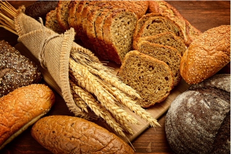
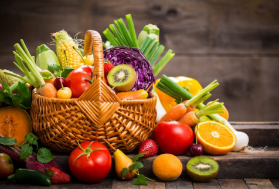

6 dicas para uma alimentação saudável
Tenha uma rotina alimentar

Inclua diariamente seis porções do grupo de cereais, tubérculos e raízes nas refeições. Dê preferência aos grãos integrais e aos alimentos na sua forma mais natural.
Dê preferência a carboidratos integrais
Coma diariamente pelo menos três porções de legumes e verduras e três porções ou mais de frutas.
Inclua frutas, legumes e verduras no seu cardápio

Consuma, no máximo, uma porção por dia de óleos
vegetais,
azeite, manteiga ou margarina. Fique atento aos rótulos dos
alimentos e escolha aqueles sem gorduras trans.
Escolha sempre gorduras boas

Consuma, no máximo, uma porção por dia de óleos vegetais, azeite, manteiga ou margarina. Fique atento aos rótulos dos alimentos e escolha aqueles sem gorduras trans.
Cuidado com o sal

Diminua a quantidade de sal na comida. Evite consumir alimentos industrializados com muito sal (sódio), como hambúrguer, salsicha, linguiça, salgadinhos, conservas de vegetais, molhos e temperos prontos.
Hidrate-se

Beba pelo menos dois litros (seis a oito copos) de água por dia. Dê preferência ao consumo de água nos intervalos das refeições.
Tabela de Calorias: Saiba mais sobreo Valor Energético dos Alimentos
Em nossa Tabela de Calorias, você encontra as informações nutricionais e o valor calórico de diversos alimentos, auxiliando em uma alimentação mais equilibrada e consciente.

O Índice de Massa Corporal (IMC) é uma medida utilizada para avaliar se uma pessoa está com o peso ideal em relação à sua altura. O cálculo é simples e usa a seguinte fórmula:
Observações Importantes:
- O IMC é uma medida de referência e pode não refletir com precisão a composição corporal (como quantidade de massa muscular ou gordura).
- Para uma análise mais completa, é sempre recomendável consultar um profissional de saúde, que pode avaliar outros fatores, como circunferência abdominal, percentual de gordura corporal e estado de saúde geral.
Passo a Passo para Calcular o IMC:
2.Meça a altura em metros (m).
3.Divida o peso pela altura ao quadrado.